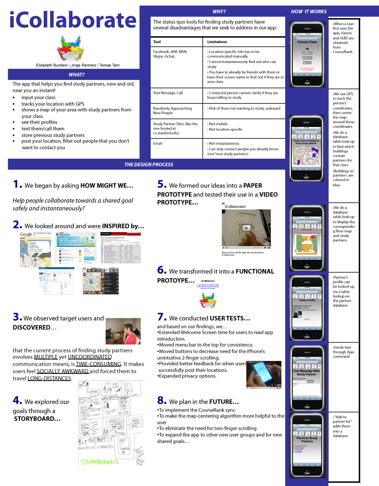

iCollaborate
iCollaborate is Elizabeth Burnstein, Jorge Ramirez, and my answer to "How might we make studying more effective?"
Through interviews, we learned from our peers that finding study buddies spontaneously, when the need arises, would greatly improve the learning experience. Many students don't plan ahead enough to go to the pre-scheduled study sessions knowing what they want to get out of it; it's often in the midst of studying independently that they realize what their study needs are. Using iCollaborate, students can identify and locate nearby peers who are willing to help and learn together.

iCollaborate manifested from Stanford's Introduction to HCI course, a 10-weeks long whirlwind tour of various tools and methodologies that user-centered designers and technologists use to conceive of and build upon ideas. I dove head-first into structured ideation, user testing, rapid prototyping (using paper, video, and web tools), and skit performance. From the discoveries that this course provided me, I knew I wanted to pursue a future career in education, design, and technology.
Below is our final presentation poster for iCollaborate.
